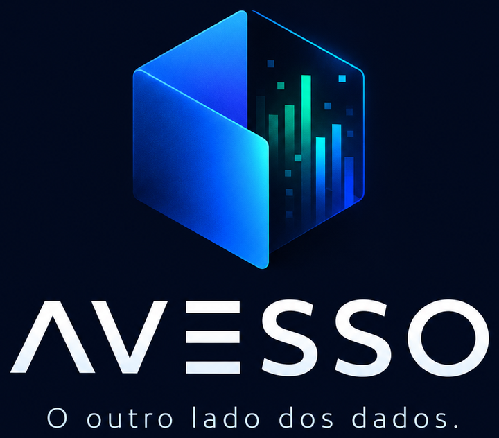
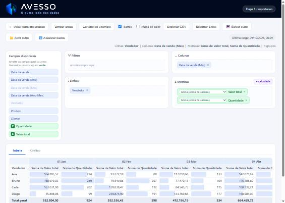
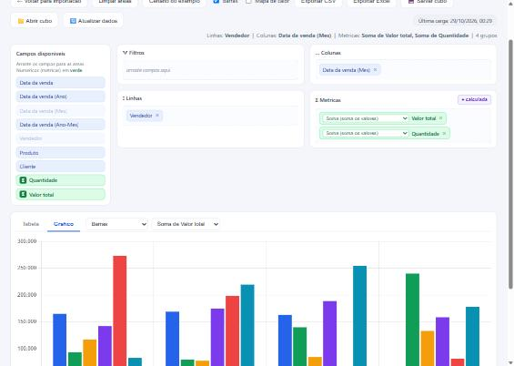

Arraste, cruze e descubra. Em minutos você transforma um monte de linhas num cubo de decisão — e enxerga o que estava escondido entre as colunas.
Sem instalação complicada, sem nuvem, sem enviar seus dados para lugar nenhum: tudo roda no seu computador.
Arraste campos para Filtros, Linhas, Colunas e Métricas. Simples como montar um quebra-cabeça.
Soma, média, contagem e até fórmulas suas (ticket médio, preço real) com subtotais ponderados.
Vire a tabela em gráfico num clique e exporte uma planilha já formatada para apresentar.
Abra um CSV ou conecte direto no MySQL, SQL Server ou PostgreSQL — sem instalar drivers.
O mesmo dado, dois olhares. Abaixo, quem vendeu o quê a cada mês — e a mesma história virando gráfico num clique. Repare: o que salta aos olhos?

O cubo montado. Vendedores nas linhas, meses nas colunas, valor e quantidade lado a lado — com os subtotais já calculados.

Um clique, virou gráfico. A evolução mês a mês aparece na hora. Qual vendedor some num mês e dispara no outro?
Qualquer um soma uma coluna. A diferença entre um relatório e uma descoberta está em saber o que cruzar com o quê. Aqui vai o raciocínio — e você vai qu[...]
Uma planilha é um depósito de respostas para perguntas que você ainda não fez. Cada linha é um fato — uma venda, um atendimento, um pedido. Sozinha, não diz nada. O cubo exis[...]
Um número isolado informa. Dois números na mesma linha deduzem.
Antes de arrastar qualquer coisa, separe seus campos em dois grupos. As dimensões são os ângulos — quem (vendedor, cliente), o quê (produto, [...]
Todo cubo útil nasce de uma intenção, não do acaso. Pergunte-se, nesta ordem:
Aqui mora o segredo. Não escolha métricas soltas — escolha pares que, juntos, contam uma história:
Soma + Contagem = ticket médio. Some o valor e, ao lado, conte os pedidos. Um total alto feito de muitos pedidos pequenos é um negócio de volume; o mesmo[...]
Valor ÷ Quantidade = preço médio real. O Avesso calcula essa divisão de forma ponderada (receita total sobre unidades totais, não a média das médias)[...]
A mesma métrica por dois ângulos = concentração. Ponha Vendedor nas Linhas e Produto nas Colunas. De repente você vê que 70% da receita de alguém vem de um único canal[...].
Métrica ao longo do tempo = tendência. Mês nas Colunas, receita no miolo. Subindo, caindo, sazonal? O gráfico conta sozinho.
Veja quatro vendedores. À primeira vista, Bruno é o campeão — fatura mais. Mas acrescente duas colunas simples, nº de pedidos e ticket médio [...]
| Vendedor | Receita | Pedidos | Ticket médio |
|---|---|---|---|
| Bruno | 919.043 | 96 | 9.573 |
| Ana | 872.728 | 88 | 9.917 |
| Carla | 873.228 | 118 | 7.400 |
| Diego | 847.214 | 98 | 8.645 |
Valores em R$. Dados de exemplo que acompanham o Avesso.
Carla e Ana faturam quase o mesmo. Mas Carla precisou de 118 pedidos para chegar lá, enquanto Ana fez só 88 — e com o maior ticket de todos.
É esse ir e vir — arrastar, cruzar, estranhar, arrastar de novo — que o Avesso torna rápido e visual. Cada combinação leva menos de dez segundos. E a próxima pergunta sempre aparece.
E se você cruzasse o seu melhor cliente com o seu pior mês? O que apareceria?
Essa é a pergunta que vale a sua planilha. Baixe o Avesso e descubra a resposta.
Baixe, use de verdade com os seus próprios dados e tire as suas conclusões. Sem cadastro, sem cartão.
Avesso onde preferir.Avesso.exe. Pronto — ele abre como qualquer programa.Se o Avesso te ajudou a enxergar algo novo nos seus números, fale comigo no WhatsApp e garanta a sua licença.